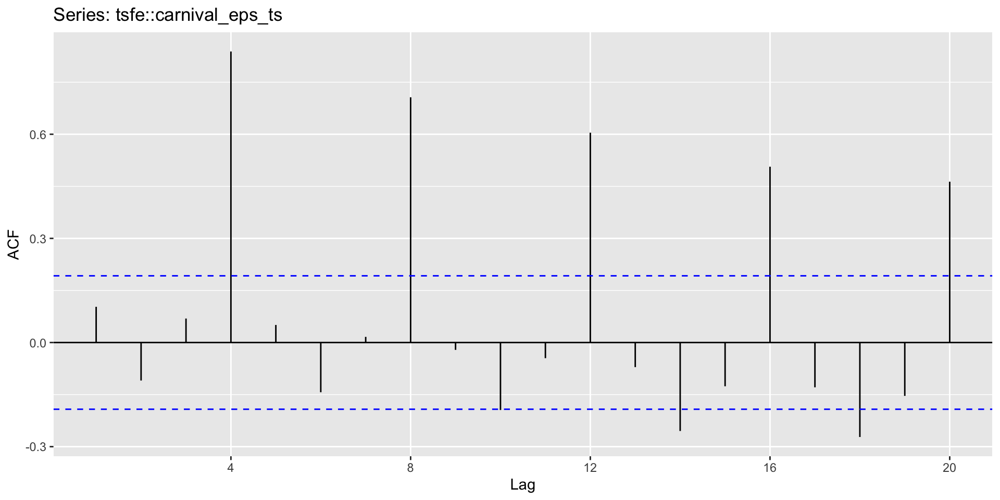

x <- c(123,39,78,52,110)
yr <- 2012:2016
knitr::kable(data.frame(Year=yr,Observation=x), booktabs=TRUE)| Year | Observation |
|---|---|
| 2012 | 123 |
| 2013 | 39 |
| 2014 | 78 |
| 2015 | 52 |
| 2016 | 110 |
tsfe and class datasetsts objects and ts functionts objects and ts functionA time series is stored in a ts object in R:
ts objects and ts functionFor observations that are more frequent than once per year, add a frequency argument.
E.g., monthly data stored as a numerical vector z:
ts(data, frequency, start)
| frequency | start | example |
|---|---|---|
| Annual | 1 | 1995 |
| Quarterly | 4 | c(1995,2) |
| Monthly | 12 | c(1995,9) |
| Daily | 7 or 365.25 | 1 or c(1995,234) |
| Weekly | 52.18 | c(1995,23) |
| Hourly | 24 or 168 or 8,766 | 1 |
| Half-hourly | 48 or 336 or 17,532 | 1 |
library(tidyverse); library(tidyquant); library(DT)
DT loads datatable interactive table visualisation
tidyquant loads:
tidyverse loads many packages include:
library(fpp2)This loads:
tg_gettq_transmuteQuarterly earnings per share data for carnival PLC.
Using DT to create an interactive table
ggplot2ggplot2 is based on The Grammar of Graphics, the idea that you can build every graph from the same components: a data set, a coordinate system, and geoms—visual marks that represent data points.tq_get to download the CBOE VIX Index from 2016-01-01 using the symbol ^VIXautoplot.Hint: the ts object of daily financial time series does not have a regular frequency to input into ts() function, so leave this argument blank.
require(grDevices)
require(graphics)
ggplot(data = data.frame(x = c(-3, 3)), aes(x)) +
stat_function(fun = dnorm,
n = 101,
args = list(mean = 0, sd =1)
,lwd=1,colour="red") +
ylab("") +
scale_y_continuous(breaks = NULL) +
labs(title=expression(y[it] %~% N(0,1)),
x=expression(y[it])) +
theme(plot.title = element_text(hjust = 0.5,size=8))This is because:
the importance of simulationPatterns of randomness are notoriously contrary to normal human thinking—our brains don’t seem to be able to do a good job understanding that random swings will be present in the short term but average out in the long run—and in many cases simulation is a big help in training our intuitions about averages and variation. (Gelman et al. 2021)
the importance of simulation.Second, we can use simulation to approximate the sampling distribution of data and propagate this to the sampling distribution of statistical estimates and procedures.
Third, regression models are not deterministic; they produce probabilistic predictions.
the importance of simulationThroughout this course and in our practice, we use simulation for all these reasons;
Suppose your company is being IPO’d at a starting price of £40.
You want to know the future price of the stock in 200 days.
You have been told Monte Carlo simulation can help predict stock market futures
Can you create a number of possible future price paths and find average price in 200 days?
How many futures should you create?
What assumptions should we make about these futures?
replicate functionpath_sim 10000 timesmedian function in the variation in the distribution is the median absolute deviation standard deviation (mad sd).We typically prefer median-based summaries because they are more computationally stable, and we rescale the median-based summary of variation as described above so as to be comparable to the standard deviation, which we already know how to interpret in usual statistical practice.
\[ \{R_{it}|i-1,\dots N;t=1,\dots,T\} \stackrel{i.i.d}\sim N (m_1,m_2) \]
\[ \{r_{it}|i=1,\dots N ;t=1,\dots,T\} \stackrel{i.i.d}\sim N (\mu,\sigma^2) \]
Visual Arguments
We can use ggplot to visualise the empirical distribution, superimposing what the returns would look like if they were normally distributed.
Read Bailey, D. H. & Prado, M. L. de. Finance is Not Excused: Why Finance Should Not Flout Basic Principles of Statistics. Ssrn Electron J (2021) doi:10.2139/ssrn.gi3895330.
Descriptive chronology is not causal explanation - Edward Tufte ( 2015) The visual display of quantitative information P37
ggseasonplot()ggsubseriesplot()The timing of peaks and troughs is predictable with seasonal data, but unpredictable in the long term with cyclic data.
One of the most important data properties that financial time series models exploits
Covariance and correlation: measure extent of linear relationship between two variables (\(y\) and \(X\)).
Autocovariance and autocorrelation: measure linear relationship between lagged values of a time series \(y\).
We measure the relationship between:
\(y_{t}\) and \(y_{t-1}\)
\(y_{t}\) and \(y_{t-2}\)
\(y_{t}\) and \(y_{t-3}\)
etc.
\[c_k = \frac{1}{T}\sum_{t=k+1}^T (y_t-\bar{y})(y_{t-k}-\bar{y})\]
where \(\bar{y}\) is the sample mean of the \(y_t\).
\[r_{k} = c_k/c_0\]
Results for first 9 lags for Carnival earnings data:
| \(r_1\) | \(r_2\) | \(r_3\) | \(r_4\) | \(r_5\) | \(r_6\) | \(r_7\) | \(r_8\) | \(r_9\) |
|---|---|---|---|---|---|---|---|---|
| 0.103 | -0.109 | 0.069 | 0.839 | 0.051 | -0.143 | 0.016 | 0.707 | -0.021 |
Results for first 9 lags for Carnival earnings data:
Time plot shows clear trend and seasonality.
The same features are reflected in the ACF.
tq_get() to download GLEN.L stock price from yahoo financeNoise makes trading in financial markets possible, and thus allows us to observe prices in financial assets. [But] noise also causes markets to be somewhat inefficient…. . Most generally, noise makes it very difficult to test either practical or academic theories about the way that financial or economic markets work. We are forced to act largely in the dark Fisher Black, Noise, Journal of Finance ,41 ,3 (1986) (p.529)
| \(r_{1}\) | \(r_{2}\) | \(r_{3}\) | \(r_{4}\) | \(r_{5}\) | \(r_{6}\) | \(r_{7}\) | \(r_{8}\) | \(r_{9}\) | \(r_{10}\) |
|---|---|---|---|---|---|---|---|---|---|
| 0.132 | -0.032 | 0.074 | -0.098 | 0.043 | 0.339 | 0.151 | 0.097 | -0.102 | -0.073 |
Sample autocorrelations for white noise series
We expect each autocorrelation to be close to zero.
Sampling distribution of \(r_k\) for white noise data is asymptotically N(0,\(1/T\)).
dgoog look like white noise?# Simple Moving Average (SMA)
sma_20 <- SMA(aapl_prices, n = 20)
# Plot SMA
ggplot() +
geom_line(aes(x = index(aapl_prices), y = as.numeric(aapl_prices)), color = "black") +
geom_line(aes(x = index(sma_20), y = as.numeric(sma_20)), color = "red") +
labs(title = "Simple Moving Average (SMA)",
x = "Time",
y = "Adjusted Close") +
scale_color_manual(name = "Series", values = c("black", "red"), labels = c("Price", "SMA")) +
theme_minimal()# Exponential Moving Average (EMA)
ema_20 <- EMA(aapl_prices, n = 20)
ggplot() +
geom_line(aes(x = index(aapl_prices), y = as.numeric(aapl_prices)), color = "black") +
geom_line(aes(x = index(ema_20), y = as.numeric(ema_20)), color = "blue") +
labs(title = "Exponential Moving Average (EMA)",
x = "Time",
y = "Adjusted Close") +
scale_color_manual(name = "Series", values = c("black", "blue"), labels = c("Price", "EMA")) +
theme_minimal()wma_custom <- WMA(aapl_prices, n = 5, wts = c(0.1, 0.2, 0.3, 0.2, 0.2))
ggplot() +
geom_line(aes(x = index(aapl_prices), y = as.numeric(aapl_prices)), color = "black") +
geom_line(aes(x = index(wma_custom), y = as.numeric(wma_custom)), color = "green") +
labs(title = "Weighted Moving Average (WMA)",
x = "Time",
y = "Adjusted Close") +
scale_color_manual(name = "Series", values = c("black", "green"), labels = c("Price", "WMA")) +
theme_minimal()sg_filter <- sgolayfilt(aapl_prices, p = 3, n = 21)
# Plot Savitzky-Golay Filter
ggplot() +
geom_line(aes(x = index(aapl_prices), y = as.numeric(aapl_prices)), color = "black") +
geom_line(aes(x = index(aapl_prices), y = as.numeric(sg_filter)), color = "purple") +
labs(title = "Savitzky-Golay Filter",
x = "Time",
y = "Adjusted Close") +
scale_color_manual(name = "Series", values = c("black", "purple"), labels = c("Price", "SG Filter")) +
theme_minimal()# Lowess Smoothing
lowess_smooth <- lowess(aapl_prices)
# Plot Lowess Smoothing
ggplot() +
geom_line(aes(x = index(aapl_prices), y = as.numeric(aapl_prices)), color = "black") +
geom_line(aes(x = index(aapl_prices), y = as.numeric(lowess_smooth$y)), color = "orange") +
labs(title = "Lowess Smoothing",
x = "Time",
y = "Adjusted Close") +
scale_color_manual(name = "Series", values = c("black", "orange"), labels = c("Price", "Lowess")) +
theme_minimal()# Apply the Kalman filter
s <- dlmSmooth(aapl_prices, dlmModPoly(1, dV = 15100, dW = 1470))
# Create a data frame for plotting
data_df <- data.frame(Date = index(aapl_prices),
Price = as.numeric(aapl_prices),
Kalman = as.numeric(dropFirst(s$s)))
# Plot the results using ggplot
data_df |>
ggplot(aes(x = Date)) +
geom_line(aes(y = Price, color = "Price")) +
geom_line(aes(y = Kalman, color = "Kalman")) +
labs(title = "Apple Inc. (AAPL) Stock Prices",
x = "Time",
y = "Adjusted Close") +
scale_color_manual(name = "Series", values = c("Price" = "black", "Kalman" = "blue")) +
theme_minimal()
Advanced Financial Data Analytics